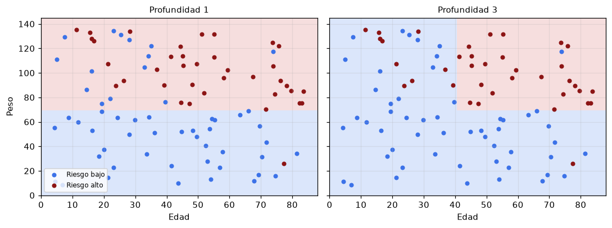
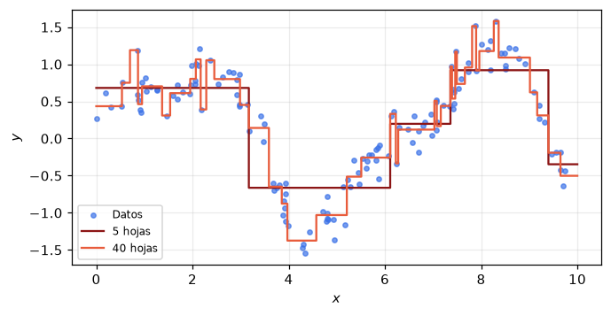
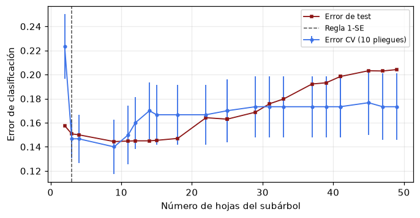
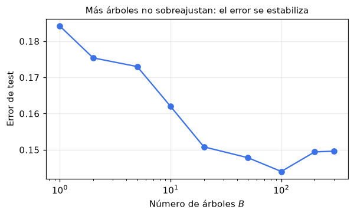
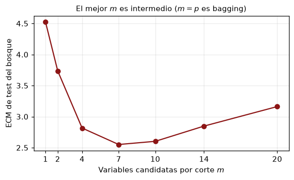
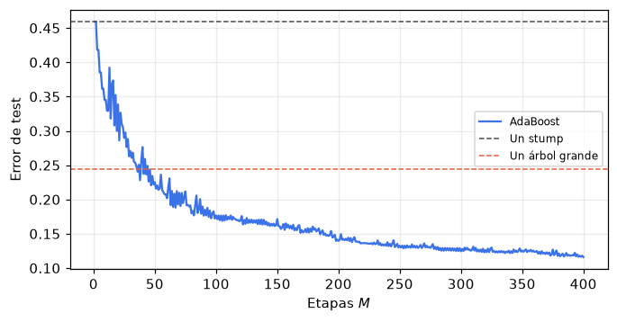
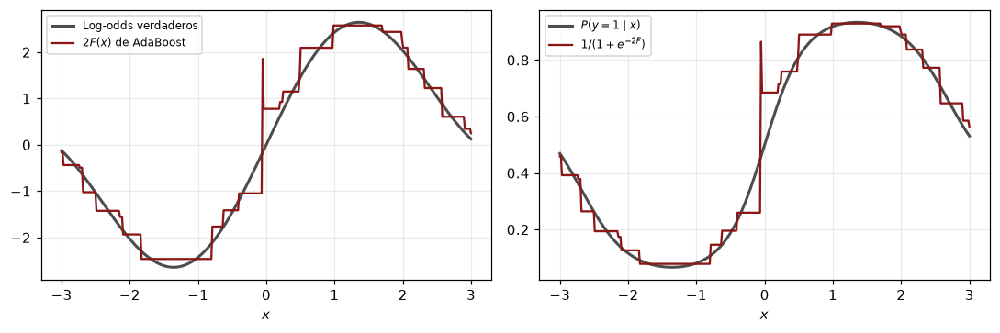
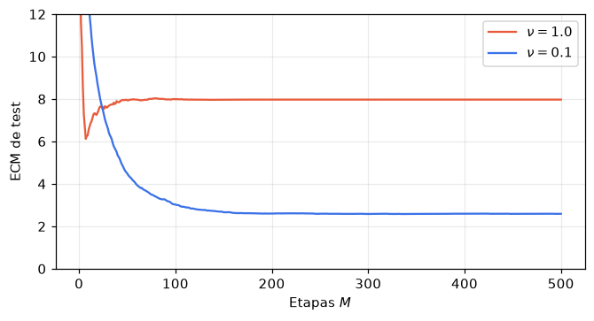
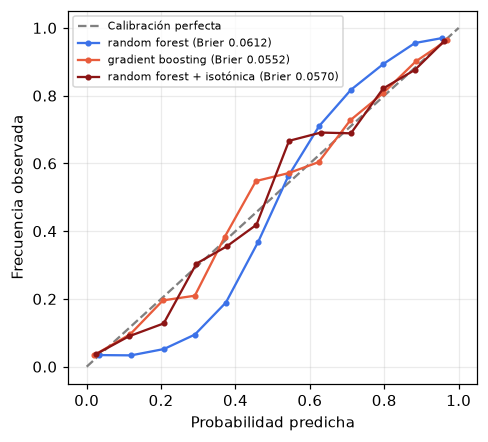

import warnings
import numpy as np
import pandas as pd
import matplotlib.pyplot as plt
from sklearn.tree import DecisionTreeClassifier, DecisionTreeRegressor, export_text
plt.rcParams.update({"figure.figsize": (6, 3.6), "axes.grid": True,
"grid.alpha": 0.25, "figure.dpi": 110})
np.set_printoptions(precision=4, suppress=True)
warnings.filterwarnings("ignore", category=FutureWarning)
ROJO, AZUL, VERDE = "#8c1515", "#3C72E8", "#006400"
NARANJA, GRIS = "#E85C3C", "#4d4d4d"Métodos basados en árboles y ensambles

Cuaderno de acompañamiento de la clase Tree-Based Methods and Ensembles.
La idea que ordena todo es la varianza de un promedio. Si \(B\) modelos tienen varianza \(\sigma^2\) y correlación \(\rho\) entre sí, su promedio tiene varianza \(\rho\sigma^2 + (1-\rho)\sigma^2/B\). Un árbol profundo tiene sesgo bajo y \(\sigma^2\) enorme, así que promediar árboles funciona, y funciona mejor cuanto menos correlacionados estén. Boosting recorre el camino opuesto y suma árboles pequeños para reducir sesgo.
Contenido:
- Un árbol de clasificación desde cero, comparado con scikit-learn.
- Un árbol de regresión es mínimos cuadrados en una base de indicadoras.
- Inestabilidad del árbol y poda por costo-complejidad con validación cruzada.
- Bagging desde cero y el error out-of-bag.
- Random forest y la fórmula de la varianza del promedio, verificada por simulación.
- AdaBoost desde cero y su relación con los log-odds.
- Gradient boosting desde cero, con pérdida cuadrática y logística, y la contracción.
- En la práctica: comparación de modelos, calibración, importancia de variables y valores faltantes.
Notación (ESL). \(N\) observaciones, \(p\) variables, \(y\) la respuesta. En bagging y random forest hay \(B\) árboles \(T_b\) y \(m\) variables candidatas por corte. En boosting hay \(M\) etapas indexadas por \(m\), y AdaBoost usa etiquetas \(y \in \{-1,+1\}\).
1. Un árbol de clasificación desde cero
Usamos el mismo ejemplo de las diapositivas. Cada paciente tiene edad y peso, y el riesgo es alto, salvo ruido, cuando la edad pasa de 45 y el peso de 70, o en un grupo pequeño de jóvenes con peso muy alto.
La impureza de Gini de un nodo con proporciones \(\hat p_k\) es \(Q = 1 - \sum_k \hat p_k^2\), y la ganancia de un corte es
\[\Delta Q = Q(P) - \frac{N_L}{N_P}Q(L) - \frac{N_R}{N_P}Q(R).\]
def datos_riesgo(n, semilla):
rng = np.random.default_rng(semilla)
edad = rng.uniform(4, 84, n)
peso = rng.uniform(8, 138, n)
puntaje = (1.9 * (edad > 45) + 1.7 * (peso > 70)
+ 1.2 * ((edad < 22) & (peso > 112))
- 1.4 * ((edad > 45) & (peso < 70))
+ rng.normal(0, 0.85, n))
return np.column_stack([edad, peso]), (puntaje > 1.95).astype(int)
X, y = datos_riesgo(90, semilla=7)
VARIABLES = ["edad", "peso"]
print("N =", len(y), " proporción de riesgo alto =", y.mean().round(3))
def gini(etiquetas):
if len(etiquetas) == 0:
return 0.0
p = np.bincount(etiquetas, minlength=2) / len(etiquetas)
return 1.0 - np.sum(p ** 2)
def entropia(etiquetas):
if len(etiquetas) == 0:
return 0.0
p = np.bincount(etiquetas, minlength=2) / len(etiquetas)
p = p[p > 0]
return -np.sum(p * np.log2(p))
def ganancia(y_padre, y_izq, y_der, impureza=gini):
n = len(y_padre)
return (impureza(y_padre) - len(y_izq) / n * impureza(y_izq)
- len(y_der) / n * impureza(y_der))
def umbrales(valores):
v = np.unique(valores)
return (v[:-1] + v[1:]) / 2 # puntos medios entre valores consecutivos
def mejor_corte(Xn, yn, min_hoja=5, impureza=gini):
mejor = None
for j in range(Xn.shape[1]):
for t in umbrales(Xn[:, j]):
izq = Xn[:, j] <= t
if izq.sum() < min_hoja or (~izq).sum() < min_hoja:
continue
g = ganancia(yn, yn[izq], yn[~izq], impureza)
if mejor is None or g > mejor["ganancia"]:
mejor = {"variable": j, "umbral": t, "ganancia": g, "izq": izq}
return mejor
def crece(Xn, yn, prof=0, prof_max=3, min_hoja=5):
nodo = {"pred": int(np.bincount(yn, minlength=2).argmax()), "hoja": True, "n": len(yn)}
if prof >= prof_max or gini(yn) == 0 or len(yn) < 2 * min_hoja:
return nodo
c = mejor_corte(Xn, yn, min_hoja)
if c is None or c["ganancia"] <= 1e-12:
return nodo
nodo.update(hoja=False, variable=c["variable"], umbral=c["umbral"])
nodo["izq"] = crece(Xn[c["izq"]], yn[c["izq"]], prof + 1, prof_max, min_hoja)
nodo["der"] = crece(Xn[~c["izq"]], yn[~c["izq"]], prof + 1, prof_max, min_hoja)
return nodo
def predice(nodo, Xg):
salida = np.empty(len(Xg), dtype=int)
for i, fila in enumerate(Xg):
n = nodo
while not n["hoja"]:
n = n["izq"] if fila[n["variable"]] <= n["umbral"] else n["der"]
salida[i] = n["pred"]
return salida
def reglas(nodo, sangria=""):
if nodo["hoja"]:
print(f"{sangria}-> clase {nodo['pred']} (n = {nodo['n']})")
return
v, t = VARIABLES[nodo["variable"]], nodo["umbral"]
print(f"{sangria}si {v} <= {t:.2f}:")
reglas(nodo["izq"], sangria + " ")
print(f"{sangria}si {v} > {t:.2f}:")
reglas(nodo["der"], sangria + " ")
arbol = crece(X, y, prof_max=3)
reglas(arbol)N = 90 proporción de riesgo alto = 0.411
si peso <= 69.55:
si edad <= 70.05:
-> clase 0 (n = 35)
si edad > 70.05:
-> clase 0 (n = 5)
si peso > 69.55:
si edad <= 40.45:
si peso <= 89.78:
-> clase 0 (n = 5)
si peso > 89.78:
-> clase 0 (n = 18)
si edad > 40.45:
si peso <= 115.60:
-> clase 1 (n = 21)
si peso > 115.60:
-> clase 1 (n = 6)El primer corte es sobre el peso y el segundo, en el hijo de peso alto, sobre la edad, que es la estructura con la que se generaron los datos.
Comparamos con DecisionTreeClassifier usando los mismos hiperparámetros. scikit-learn implementa CART con los mismos umbrales (puntos medios) y el mismo criterio, así que el árbol debería coincidir salvo empates.
sk = DecisionTreeClassifier(max_depth=3, min_samples_leaf=5, random_state=0).fit(X, y)
print(export_text(sk, feature_names=VARIABLES))
rng = np.random.default_rng(0)
Xg = np.column_stack([rng.uniform(0, 88, 20000), rng.uniform(0, 145, 20000)])
print("acuerdo entre ambos árboles en 20.000 puntos nuevos:",
(predice(arbol, Xg) == sk.predict(Xg)).mean())|--- peso <= 69.55
| |--- edad <= 70.05
| | |--- class: 0
| |--- edad > 70.05
| | |--- class: 0
|--- peso > 69.55
| |--- edad <= 40.45
| | |--- peso <= 89.78
| | | |--- class: 0
| | |--- peso > 89.78
| | | |--- class: 0
| |--- edad > 40.45
| | |--- peso <= 115.60
| | | |--- class: 1
| | |--- peso > 115.60
| | | |--- class: 1
acuerdo entre ambos árboles en 20.000 puntos nuevos: 1.0Las regiones del árbol son rectángulos con una clase constante en cada uno.
gx, gy = np.meshgrid(np.linspace(0, 88, 300), np.linspace(0, 145, 300))
G = np.c_[gx.ravel(), gy.ravel()]
fig, ax = plt.subplots(1, 2, figsize=(10, 3.8), sharey=True)
for a, prof in zip(ax, [1, 3]):
z = predice(crece(X, y, prof_max=prof), G).reshape(gx.shape)
a.contourf(gx, gy, z, levels=[-.5, .5, 1.5], colors=["#dbe6fb", "#f6dede"])
a.scatter(*X[y == 0].T, s=18, color=AZUL, label="Riesgo bajo")
a.scatter(*X[y == 1].T, s=18, color=ROJO, label="Riesgo alto")
a.set_xlabel("Edad"); a.set_title(f"Profundidad {prof}", fontsize=10)
ax[0].set_ylabel("Peso"); ax[0].legend(loc="lower left", fontsize=8)
fig.tight_layout(); plt.show()
Gini, entropía y error de clasificación
Un nodo con 60 casos y proporciones 75/25 se puede dividir en dos hijos de 30, uno puro (100/0) y otro 50/50. La clase mayoritaria de cada hijo predice exactamente los mismos aciertos que el padre, así que el error de clasificación no cambia. Gini y entropía, en cambio, premian el corte, porque deja una hoja pura.
padre = np.r_[np.zeros(45), np.ones(15)].astype(int)
izq, der = np.zeros(30, int), np.r_[np.zeros(15), np.ones(15)].astype(int)
error = lambda e: 0.0 if len(e) == 0 else 1 - np.bincount(e).max() / len(e)
for nombre, Q in [("error de clasificación", error), ("Gini", gini), ("entropía", entropia)]:
print(f"{nombre:24s} ganancia = {ganancia(padre, izq, der, Q):.4f}")error de clasificación ganancia = 0.0000
Gini ganancia = 0.1250
entropía ganancia = 0.31132. Un árbol de regresión es mínimos cuadrados en una base de indicadoras
Un árbol con \(J\) hojas se escribe
\[T(\mathbf{x}) = \sum_{m=1}^{J} c_m\,\phi_m(\mathbf{x}), \qquad \phi_m(\mathbf{x}) = \mathbf{1}\{\mathbf{x}\in R_m\}.\]
Fijadas las regiones, este es el modelo lineal de la clase 1 con una base particular. Las indicadoras de regiones disjuntas son ortogonales, así que \(\boldsymbol{\Phi}^{\top}\boldsymbol{\Phi}\) es diagonal y los coeficientes de mínimos cuadrados son las medias de cada hoja. Lo verificamos construyendo \(\boldsymbol{\Phi}\) con apply, que devuelve la hoja de cada dato.
rng = np.random.default_rng(3)
xr = np.sort(rng.uniform(0, 10, 140))
yr = np.sin(xr) + 0.35 * np.cos(2.2 * xr) + rng.normal(0, 0.22, xr.size)
rt = DecisionTreeRegressor(max_leaf_nodes=5, random_state=0).fit(xr[:, None], yr)
hojas = rt.apply(xr[:, None])
ids = np.unique(hojas)
Phi = (hojas[:, None] == ids[None, :]).astype(float) # N x J, una columna por hoja
c_ls = np.linalg.lstsq(Phi, yr, rcond=None)[0]
c_arbol = rt.tree_.value[ids, 0, 0]
print("Phi^T Phi =\n", Phi.T @ Phi)
print("mínimos cuadrados:", c_ls)
print("valores del árbol:", c_arbol)
print("máxima discrepancia:", np.abs(c_ls - c_arbol).max())Phi^T Phi =
[[41. 0. 0. 0. 0.]
[ 0. 45. 0. 0. 0.]
[ 0. 0. 6. 0. 0.]
[ 0. 0. 0. 19. 0.]
[ 0. 0. 0. 0. 29.]]
mínimos cuadrados: [ 0.6813 -0.6634 -0.3468 0.1978 0.9198]
valores del árbol: [ 0.6813 -0.6634 -0.3468 0.1978 0.9198]
máxima discrepancia: 1.1102230246251565e-16xf = np.linspace(0, 10, 600)
fig, ax = plt.subplots(figsize=(7, 3.4))
ax.scatter(xr, yr, s=12, color=AZUL, alpha=0.7, label="Datos")
for J, col in [(5, ROJO), (40, NARANJA)]:
m = DecisionTreeRegressor(max_leaf_nodes=J, random_state=0).fit(xr[:, None], yr)
ax.plot(xf, m.predict(xf[:, None]), color=col, drawstyle="steps-post", label=f"{J} hojas")
ax.set_xlabel("$x$"); ax.set_ylabel("$y$"); ax.legend(fontsize=8)
plt.show()
Con 5 hojas el árbol captura la forma gruesa; con 40 empieza a seguir el ruido. Los cortes no son equiespaciados, porque la base se adapta a los datos. Esa adaptación es la que introduce la varianza, como se ve a continuación.
3. Inestabilidad y poda por costo-complejidad
Entrenamos un árbol en cinco muestras bootstrap del mismo conjunto y miramos sólo el corte de la raíz. Si la raíz cambia, cambia todo lo que crece debajo.
X300, y300 = datos_riesgo(300, semilla=1)
rng = np.random.default_rng(0)
for b in range(6):
idx = rng.integers(0, len(y300), len(y300))
m = DecisionTreeClassifier(random_state=0).fit(X300[idx], y300[idx])
j, t = m.tree_.feature[0], m.tree_.threshold[0]
print(f"muestra {b}: raíz {VARIABLES[j]} <= {t:6.2f} hojas = {m.get_n_leaves():3d}")muestra 0: raíz peso <= 70.18 hojas = 28
muestra 1: raíz peso <= 70.47 hojas = 39
muestra 2: raíz peso <= 77.78 hojas = 35
muestra 3: raíz peso <= 71.65 hojas = 32
muestra 4: raíz peso <= 77.78 hojas = 40
muestra 5: raíz peso <= 70.59 hojas = 32La variable de la raíz es la misma en las seis muestras, porque el corte en peso es mucho mejor que cualquier otro, pero su umbral se mueve entre 70 y 78 y el número de hojas del árbol completo cambia mucho de una muestra a otra.
La poda por costo-complejidad minimiza
\[C_\alpha(T) = \sum_{m=1}^{|T|} N_m Q_m(T) + \alpha |T|,\]
con la misma estructura de ajuste más penalización que ridge y lasso en la clase 2. Al crecer \(\alpha\) se obtiene una sucesión anidada de subárboles, el camino de poda. Elegimos \(\alpha\) por validación cruzada con la regla de un error estándar, la misma de la clase 2: el \(\alpha\) más grande (árbol más chico) cuyo error está a menos de un error estándar del mínimo.
from sklearn.model_selection import StratifiedKFold, cross_val_score
Xte, yte = datos_riesgo(5000, semilla=2)
camino = DecisionTreeClassifier(random_state=0).cost_complexity_pruning_path(X300, y300)
alphas = camino.ccp_alphas[:-1] # el último deja sólo la raíz
kf = StratifiedKFold(10, shuffle=True, random_state=0)
cv_m, cv_se, hojas, e_test = [], [], [], []
for a in alphas:
m = DecisionTreeClassifier(random_state=0, ccp_alpha=a)
err = 1 - cross_val_score(m, X300, y300, cv=kf)
cv_m.append(err.mean()); cv_se.append(err.std(ddof=1) / np.sqrt(len(err)))
m.fit(X300, y300)
hojas.append(m.get_n_leaves()); e_test.append(1 - m.score(Xte, yte))
cv_m, cv_se, hojas, e_test = map(np.array, (cv_m, cv_se, hojas, e_test))
k_min = cv_m.argmin()
k_1se = np.max(np.flatnonzero(cv_m <= cv_m[k_min] + cv_se[k_min]))
for nombre, k in [("mínimo CV", k_min), ("regla 1-SE", k_1se), ("sin podar", 0)]:
print(f"{nombre:11s} alpha = {alphas[k]:.4f} hojas = {hojas[k]:3d} "
f"CV = {cv_m[k]:.3f} test = {e_test[k]:.3f}")
fig, ax = plt.subplots(figsize=(7, 3.4))
ax.errorbar(hojas, cv_m, yerr=cv_se, fmt="o-", ms=3, color=AZUL, lw=1.2, label="Error CV (10 pliegues)")
ax.plot(hojas, e_test, "s-", ms=3, color=ROJO, lw=1.2, label="Error de test")
ax.axvline(hojas[k_1se], color=GRIS, ls="--", lw=1, label="Regla 1-SE")
ax.set_xlabel("Número de hojas del subárbol"); ax.set_ylabel("Error de clasificación")
ax.legend(fontsize=8); plt.show()mínimo CV alpha = 0.0070 hojas = 9 CV = 0.140 test = 0.144
regla 1-SE alpha = 0.0128 hojas = 3 CV = 0.147 test = 0.151
sin podar alpha = 0.0000 hojas = 49 CV = 0.173 test = 0.204
4. Bagging desde cero y el error out-of-bag
Bagging entrena \(B\) árboles profundos, cada uno en una muestra bootstrap, y promedia sus probabilidades. Cada muestra deja fuera a cada observación con probabilidad \((1-1/N)^N \approx e^{-1} \approx 0{,}368\). Prediciendo cada dato sólo con los árboles que no lo vieron obtenemos el error out-of-bag, una estimación del error de generalización que no necesita un conjunto de validación aparte.
def bagging(X, y, B=300, semilla=0, max_features=None):
rng = np.random.default_rng(semilla)
N = len(y)
arboles, fuera = [], []
for b in range(B):
idx = rng.integers(0, N, N)
t = DecisionTreeClassifier(max_features=max_features,
random_state=int(rng.integers(1 << 31))).fit(X[idx], y[idx])
arboles.append(t)
fuera.append(np.setdiff1d(np.arange(N), idx))
return arboles, fuera
def prob_bagging(arboles, X):
return np.mean([t.predict_proba(X)[:, 1] for t in arboles], axis=0)
arboles, fuera = bagging(X300, y300, B=300)
print("fracción out-of-bag media:", np.mean([len(f) for f in fuera]) / len(y300),
" e^{-1} =", round(np.exp(-1), 4))
# predicción out-of-bag: para cada i, sólo los árboles que no lo vieron
suma, cuenta = np.zeros(len(y300)), np.zeros(len(y300))
for t, f in zip(arboles, fuera):
suma[f] += t.predict_proba(X300[f])[:, 1]
cuenta[f] += 1
p_oob = suma / cuenta
unico = DecisionTreeClassifier(random_state=0).fit(X300, y300)
print(f"un árbol profundo, error de test : {1 - unico.score(Xte, yte):.3f}")
print(f"bagging, error out-of-bag : {np.mean((p_oob > 0.5) != y300):.3f}")
print(f"bagging, error de test : {np.mean((prob_bagging(arboles, Xte) > 0.5) != yte):.3f}")fracción out-of-bag media: 0.3648888888888889 e^{-1} = 0.3679
un árbol profundo, error de test : 0.204
bagging, error out-of-bag : 0.157
bagging, error de test : 0.150El error out-of-bag está cerca del error de test, y ambos muy por debajo del de un árbol solo. scikit-learn hace lo mismo con RandomForestClassifier(max_features=None, oob_score=True), que con todas las variables candidatas en cada corte es exactamente bagging.
El error out-of-bag también sirve para decidir cuántos árboles bastan.
from sklearn.ensemble import RandomForestClassifier
rf = RandomForestClassifier(n_estimators=300, max_features=None, oob_score=True,
random_state=0, n_jobs=-1).fit(X300, y300)
print(f"scikit-learn: error out-of-bag = {1 - rf.oob_score_:.3f} "
f"error de test = {1 - rf.score(Xte, yte):.3f}")
Bs = [1, 2, 5, 10, 20, 50, 100, 200, 300]
err_B = [np.mean((prob_bagging(arboles[:B], Xte) > 0.5) != yte) for B in Bs]
fig, ax = plt.subplots(figsize=(6, 3.2))
ax.plot(Bs, err_B, "o-", color=AZUL)
ax.set_xscale("log"); ax.set_xlabel("Número de árboles $B$"); ax.set_ylabel("Error de test")
ax.set_title("Más árboles no sobreajustan: el error se estabiliza", fontsize=10)
plt.show()scikit-learn: error out-of-bag = 0.163 error de test = 0.147
5. Random forest y la varianza del promedio
La fórmula central de la clase es
\[\operatorname{Var}\big(\hat f_B(\mathbf{x})\big) = \rho(\mathbf{x})\,\sigma^2(\mathbf{x}) + \frac{1-\rho(\mathbf{x})}{B}\,\sigma^2(\mathbf{x}),\]
donde \(\sigma^2(\mathbf{x})\) es la varianza de un árbol y \(\rho(\mathbf{x})\) la correlación entre dos árboles del mismo bosque. Ambas se refieren a la aleatoriedad del conjunto de entrenamiento y del remuestreo, a \(\mathbf{x}\) fijo. Para medirlas hay que repetir el experimento con muchos conjuntos de entrenamiento, cosa que sólo se puede hacer en simulación.
Usamos \(p = 20\) variables correlacionadas, una de las cuales domina la respuesta. Para cada uno de \(K\) conjuntos de entrenamiento entrenamos un bosque de \(B\) árboles y guardamos las predicciones de cada árbol en puntos de test fijos.
from sklearn.ensemble import RandomForestRegressor
def datos_corr(n, semilla, p=20):
r = np.random.default_rng(semilla)
Xc = 0.6 * r.normal(size=(n, 1)) + 0.8 * r.normal(size=(n, p))
f = 4.0 * np.tanh(Xc[:, 0]) + 0.6 * np.sin(Xc[:, 1:]).sum(axis=1)
return Xc, f, f + r.normal(0, 1.0, n)
Xc_te, fc_te, _ = datos_corr(300, 999)
K, B = 60, 50
def experimento(m):
# preds[k, b, i]: árbol b del bosque entrenado con el conjunto k, en el punto de test i
preds = np.empty((K, B, len(fc_te)))
for k in range(K):
Xk, _, yk = datos_corr(200, k)
bosque = RandomForestRegressor(n_estimators=B, max_features=m, random_state=k,
n_jobs=-1).fit(Xk, yk)
preds[k] = np.array([t.predict(Xc_te) for t in bosque.estimators_])
return preds
for m in [20, 7]:
P = experimento(m)
sigma2 = P.var(axis=0).mean(axis=0) # varianza de un árbol, sobre k
# correlación entre pares de árboles distintos del mismo bosque, sobre k
C = np.mean([np.cov(P[:, b], P[:, b + 1], rowvar=False)[:len(fc_te), len(fc_te):].diagonal()
for b in range(0, B - 1, 2)], axis=0)
rho = C / sigma2
var_real = P.mean(axis=1).var(axis=0) # varianza del promedio, medida
var_formula = rho * sigma2 + (1 - rho) / B * sigma2
print(f"m = {m:2d}: rho medio = {rho.mean():.3f} sigma^2 medio = {sigma2.mean():.2f} "
f"Var(promedio) medida = {var_real.mean():.3f} fórmula = {var_formula.mean():.3f}")m = 20: rho medio = 0.087 sigma^2 medio = 10.68 Var(promedio) medida = 1.126 fórmula = 1.130
m = 7: rho medio = 0.039 sigma^2 medio = 12.97 Var(promedio) medida = 0.696 fórmula = 0.726La fórmula reproduce la varianza medida del promedio. Al pasar de \(m = p\) (bagging) a \(m = 7\) la correlación baja, pero la varianza de cada árbol sube, porque en muchos nodos no puede usar la mejor variable. El error de test negocia entre ambos efectos.
ms = [1, 2, 4, 7, 10, 14, 20]
errs = []
for m in ms:
e = []
for k in range(4):
Xk, _, yk = datos_corr(200, 500 + k)
bosque = RandomForestRegressor(n_estimators=250, max_features=m, random_state=0,
n_jobs=-1).fit(Xk, yk)
e.append(np.mean((bosque.predict(Xc_te) - fc_te) ** 2))
errs.append(np.mean(e))
fig, ax = plt.subplots(figsize=(6, 3.2))
ax.plot(ms, errs, "o-", color=ROJO)
ax.set_xticks(ms); ax.set_xlabel("Variables candidatas por corte $m$")
ax.set_ylabel("ECM de test del bosque")
ax.set_title("El mejor $m$ es intermedio ($m = p$ es bagging)", fontsize=10)
plt.show()
6. AdaBoost desde cero
Con \(y_i \in \{-1,+1\}\) y pesos iniciales \(w_i = 1/N\), para \(m = 1, \ldots, M\):
- Ajustar un stump \(h_m\) con pesos \(w_i\).
- \(\epsilon_m = \sum_i w_i \mathbf{1}\{y_i \neq h_m(\mathbf{x}_i)\}\) y \(\alpha_m = \tfrac12\log\frac{1-\epsilon_m}{\epsilon_m}\).
- \(w_i \leftarrow w_i\,e^{-\alpha_m y_i h_m(\mathbf{x}_i)}\) y normalizar.
Usamos el ejemplo de ESL §10.1: diez variables gaussianas y \(y = 1\) si \(\sum_j x_j^2\) supera la mediana de una \(\chi^2_{10}\). Un stump solo es apenas mejor que el azar.
from sklearn.datasets import make_hastie_10_2
Xh, yh = make_hastie_10_2(n_samples=12000, random_state=1)
Xh_tr, yh_tr, Xh_te, yh_te = Xh[:2000], yh[:2000], Xh[2000:], yh[2000:]
def adaboost(X, y, M=400):
N = len(y)
w = np.full(N, 1 / N)
stumps, alphas = [], []
for m in range(M):
h = DecisionTreeClassifier(max_depth=1, random_state=0).fit(X, y, sample_weight=w)
pred = h.predict(X)
eps = w[pred != y].sum()
alpha = 0.5 * np.log((1 - eps) / eps)
w = w * np.exp(-alpha * y * pred)
w /= w.sum()
# tras la actualización, el stump recién entrenado tiene error exactamente 1/2
assert np.isclose(w[pred != y].sum(), 0.5)
stumps.append(h); alphas.append(alpha)
return stumps, np.array(alphas)
def puntaje(stumps, alphas, X):
# F_m(x) para m = 1..M, acumulado: matriz M x N
return np.cumsum([a * h.predict(X) for h, a in zip(stumps, alphas)], axis=0)
stumps, alphas = adaboost(Xh_tr, yh_tr, M=400)
F_te = puntaje(stumps, alphas, Xh_te)
err_ada = (np.sign(F_te) != yh_te).mean(axis=1)
e_stump = 1 - DecisionTreeClassifier(max_depth=1).fit(Xh_tr, yh_tr).score(Xh_te, yh_te)
grande = DecisionTreeClassifier(random_state=0).fit(Xh_tr, yh_tr)
e_grande = 1 - grande.score(Xh_te, yh_te)
print(f"un stump: {e_stump:.3f} árbol de {grande.get_n_leaves()} hojas: {e_grande:.3f} "
f"AdaBoost con 400 stumps: {err_ada[-1]:.3f}")
fig, ax = plt.subplots(figsize=(7, 3.4))
ax.plot(np.arange(1, 401), err_ada, color=AZUL, label="AdaBoost")
ax.axhline(e_stump, color=GRIS, ls="--", lw=1, label="Un stump")
ax.axhline(e_grande, color=NARANJA, ls="--", lw=1, label="Un árbol grande")
ax.set_xlabel("Etapas $M$"); ax.set_ylabel("Error de test"); ax.legend(fontsize=8)
plt.show()un stump: 0.459 árbol de 249 hojas: 0.245 AdaBoost con 400 stumps: 0.116
Esta es la figura 10.2 de ESL. Cuatrocientos clasificadores casi aleatorios superan con amplitud a un árbol grande.
scikit-learn implementa SAMME, que para dos clases usa \(\alpha_m = \log\frac{1-\epsilon_m}{\epsilon_m}\), el doble del nuestro. Multiplicar todos los \(\alpha_m\) por dos no cambia los pesos relativos ni el signo de la suma, así que las predicciones deben coincidir.
from sklearn.ensemble import AdaBoostClassifier
ada_sk = AdaBoostClassifier(estimator=DecisionTreeClassifier(max_depth=1), n_estimators=400,
random_state=0).fit(Xh_tr, yh_tr)
print("acuerdo con scikit-learn en test:", (ada_sk.predict(Xh_te) == np.sign(F_te[-1])).mean())
print("razón entre los alphas (primeros 5):", (ada_sk.estimator_weights_[:5] / alphas[:5]).round(4))acuerdo con scikit-learn en test: 1.0
razón entre los alphas (primeros 5): [2. 2. 2. 2. 2.]AdaBoost estima la mitad de los log-odds
AdaBoost minimiza por etapas la pérdida exponencial \(e^{-yF(\mathbf{x})}\), cuyo minimizador poblacional es
\[F^*(\mathbf{x}) = \frac12 \log\frac{P(y=+1\mid\mathbf{x})}{P(y=-1\mid\mathbf{x})}.\]
Entonces \(\hat p(\mathbf{x}) = 1/(1+e^{-2F(\mathbf{x})})\) debería aproximar la probabilidad. Lo comprobamos en un problema de una variable donde conocemos la probabilidad verdadera. Pocas etapas, porque con muchas AdaBoost empuja los puntajes hacia los extremos.
rng = np.random.default_rng(4)
x1 = rng.uniform(-3, 3, 4000)
logit_verdad = lambda x: 2.0 * np.sin(1.3 * x) + 0.5 * x
y1 = np.where(rng.uniform(size=x1.size) < 1 / (1 + np.exp(-logit_verdad(x1))), 1, -1)
st1, al1 = adaboost(x1[:, None], y1, M=60)
xs = np.linspace(-3, 3, 400)
F1 = puntaje(st1, al1, xs[:, None])[-1]
fig, ax = plt.subplots(1, 2, figsize=(10, 3.4))
ax[0].plot(xs, logit_verdad(xs), color=GRIS, lw=2, label="Log-odds verdaderos")
ax[0].plot(xs, 2 * F1, color=ROJO, label="$2F(x)$ de AdaBoost")
ax[0].set_xlabel("$x$"); ax[0].legend(fontsize=8)
ax[1].plot(xs, 1 / (1 + np.exp(-logit_verdad(xs))), color=GRIS, lw=2, label="$P(y=1\\mid x)$")
ax[1].plot(xs, 1 / (1 + np.exp(-2 * F1)), color=ROJO, label="$1/(1+e^{-2F})$")
ax[1].set_xlabel("$x$"); ax[1].legend(fontsize=8)
fig.tight_layout(); plt.show()
7. Gradient boosting desde cero
En cada etapa se ajusta un árbol de regresión pequeño a los pseudo-residuos \(r_i = -\partial L(y_i, F(\mathbf{x}_i))/\partial F(\mathbf{x}_i)\) y se actualiza \(F_m = F_{m-1} + \nu h_m\).
Pérdida cuadrática
Los pseudo-residuos son los residuos ordinarios \(y_i - F_{m-1}(\mathbf{x}_i)\). Usamos la función de Friedman #1 y comparamos con GradientBoostingRegressor, que con pérdida cuadrática hace exactamente esto.
from sklearn.datasets import make_friedman1
from sklearn.ensemble import GradientBoostingRegressor
Xf, yf = make_friedman1(200, noise=1.0, random_state=5)
Xf_te, ff_te = make_friedman1(3000, noise=0.0, random_state=99)
def gb_cuadratico(X, y, Xt, M=500, nu=0.1, prof=2):
F, Ft = np.full(len(y), y.mean()), np.full(len(Xt), y.mean())
curva = []
for m in range(M):
h = DecisionTreeRegressor(max_depth=prof, random_state=0).fit(X, y - F)
F += nu * h.predict(X); Ft += nu * h.predict(Xt)
curva.append(Ft.copy())
return np.array(curva), F
fig, ax = plt.subplots(figsize=(7, 3.4))
for nu, col in [(1.0, NARANJA), (0.1, AZUL)]:
propio, F_tr = gb_cuadratico(Xf, yf, Xf_te, nu=nu)
ecm = ((propio - ff_te) ** 2).mean(axis=1)
sk = GradientBoostingRegressor(n_estimators=500, learning_rate=nu, max_depth=2,
random_state=0).fit(Xf, yf)
dif = np.abs(F_tr - sk.predict(Xf)).max()
print(f"nu = {nu}: ECM mínimo {ecm.min():.3f} en M = {ecm.argmin() + 1}, "
f"ECM final {ecm[-1]:.3f} (discrepancia con scikit-learn en entrenamiento: {dif:.1e})")
ax.plot(np.arange(1, 501), ecm, color=col, label=f"$\\nu = {nu}$")
ax.set_ylim(0, 12); ax.set_xlabel("Etapas $M$"); ax.set_ylabel("ECM de test"); ax.legend()
plt.show()nu = 1.0: ECM mínimo 6.121 en M = 7, ECM final 7.970 (discrepancia con scikit-learn en entrenamiento: 1.8e-14)
nu = 0.1: ECM mínimo 2.579 en M = 335, ECM final 2.589 (discrepancia con scikit-learn en entrenamiento: 1.1e-14)
Las predicciones de entrenamiento coinciden con las de scikit-learn hasta el redondeo. En los datos de test pueden diferir un poco, por empates. En algunas etapas dos cortes sobre variables distintas producen exactamente la misma partición de los 200 datos de entrenamiento; ambas implementaciones ajustan igual, pero eligen variables distintas y por eso predicen distinto en puntos nuevos. Es otra forma de la inestabilidad de los árboles.
Con \(\nu = 1\) el modelo alcanza su mejor error en pocas etapas y después sobreajusta. Con \(\nu = 0{,}1\) necesita cientos de etapas, pero llega mucho más abajo y la curva es plana cerca del mínimo. En boosting, a diferencia de random forest, el número de etapas sí es un parámetro de complejidad.
Pérdida logística
Con \(y_i \in \{0,1\}\), \(\hat p_i = \sigma(F(\mathbf{x}_i))\) y la entropía cruzada de la clase 3, el pseudo-residuo es
\[r_i = y_i - \hat p_i,\]
el mismo etiqueta menos predicción del gradiente de la regresión logística. El árbol se ajusta a esos residuos, y después el valor de cada hoja se reemplaza por un paso de Newton sobre la pérdida original,
\[\gamma_{\text{hoja}} = \frac{\sum_{i \in \text{hoja}} r_i}{\sum_{i \in \text{hoja}} \hat p_i(1-\hat p_i)},\]
que es lo que hacen GradientBoostingClassifier y, con más detalle, XGBoost.
from sklearn.datasets import load_breast_cancer
from sklearn.ensemble import GradientBoostingClassifier
from sklearn.model_selection import train_test_split
sigmoide = lambda z: 1 / (1 + np.exp(-z))
d = load_breast_cancer()
Xb_tr, Xb_te, yb_tr, yb_te = train_test_split(d.data, d.target, test_size=0.4,
stratify=d.target, random_state=0)
def gb_logistico(X, y, Xt, M=200, nu=0.1, prof=2):
F0 = np.log(y.mean() / (1 - y.mean()))
F, Ft = np.full(len(y), F0), np.full(len(Xt), F0)
for m in range(M):
p = sigmoide(F)
r = y - p # pseudo-residuos
h = DecisionTreeRegressor(max_depth=prof, random_state=0).fit(X, r)
hoja, hoja_t = h.apply(X), h.apply(Xt)
gamma = {l: r[hoja == l].sum() / (p[hoja == l] * (1 - p[hoja == l])).sum()
for l in np.unique(hoja)} # paso de Newton por hoja
F += nu * np.array([gamma[l] for l in hoja])
Ft += nu * np.array([gamma[l] for l in hoja_t])
return sigmoide(F), sigmoide(Ft)
def log_loss(y, p):
p = np.clip(p, 1e-12, 1 - 1e-12)
return -np.mean(y * np.log(p) + (1 - y) * np.log(1 - p))
p_tr_propio, p_propio = gb_logistico(Xb_tr, yb_tr, Xb_te)
sk = GradientBoostingClassifier(n_estimators=200, learning_rate=0.1, max_depth=2,
random_state=0).fit(Xb_tr, yb_tr)
p_sk = sk.predict_proba(Xb_te)[:, 1]
print(f"propio : exactitud de test {np.mean((p_propio > .5) == yb_te):.3f} "
f"log-loss {log_loss(yb_te, p_propio):.4f}")
print(f"scikit-learn : exactitud de test {np.mean((p_sk > .5) == yb_te):.3f} "
f"log-loss {log_loss(yb_te, p_sk):.4f}")
print("máxima discrepancia en las probabilidades de entrenamiento:",
np.abs(p_tr_propio - sk.predict_proba(Xb_tr)[:, 1]).max())propio : exactitud de test 0.956 log-loss 0.1256
scikit-learn : exactitud de test 0.961 log-loss 0.1242
máxima discrepancia en las probabilidades de entrenamiento: 2.220446049250313e-168. En la práctica
Comparación de modelos
Cinco modelos sobre los datos de cáncer de mama, con validación cruzada de 10 pliegues. La regresión logística necesita estandarizar dentro del pliegue; los árboles no, porque sus cortes son invariantes a transformaciones monótonas de cada variable.
from sklearn.ensemble import HistGradientBoostingClassifier
from sklearn.linear_model import LogisticRegression
from sklearn.model_selection import cross_validate
from sklearn.pipeline import make_pipeline
from sklearn.preprocessing import StandardScaler
modelos = {
"regresión logística": make_pipeline(StandardScaler(), LogisticRegression(max_iter=5000)),
"árbol podado": DecisionTreeClassifier(ccp_alpha=0.01, random_state=0),
"bagging": RandomForestClassifier(300, max_features=None, random_state=0, n_jobs=-1),
"random forest": RandomForestClassifier(300, random_state=0, n_jobs=-1),
"gradient boosting": HistGradientBoostingClassifier(learning_rate=0.05, max_iter=300,
random_state=0),
}
kf = StratifiedKFold(10, shuffle=True, random_state=0)
filas = []
for nombre, m in modelos.items():
r = cross_validate(m, d.data, d.target, cv=kf,
scoring=["accuracy", "roc_auc", "neg_brier_score"])
filas.append({"modelo": nombre, "exactitud": r["test_accuracy"].mean(),
"AUC": r["test_roc_auc"].mean(), "Brier": -r["test_neg_brier_score"].mean()})
pd.DataFrame(filas).set_index("modelo").round(4)| exactitud | AUC | Brier | |
|---|---|---|---|
| modelo | |||
| regresión logística | 0.9772 | 0.9953 | 0.0197 |
| árbol podado | 0.9297 | 0.9316 | 0.0644 |
| bagging | 0.9614 | 0.9901 | 0.0332 |
| random forest | 0.9631 | 0.9906 | 0.0299 |
| gradient boosting | 0.9683 | 0.9946 | 0.0251 |
En este conjunto la regresión logística es difícil de superar: 30 variables continuas, fronteras casi lineales y pocas observaciones. Los ensambles de árboles ganan cuando hay interacciones y umbrales, como en el ejemplo de riesgo. Ningún método domina en todos los problemas, y por eso se comparan con validación cruzada.
Calibración
Un bosque promedia votos, y para llegar a 0 o 1 necesita que todos los árboles coincidan, así que sus probabilidades se encogen hacia el centro. Lo vemos en un problema sintético grande, junto con la corrección isotónica de CalibratedClassifierCV, que se ajusta con validación cruzada interna y nunca con las predicciones de entrenamiento.
from sklearn.calibration import CalibratedClassifierCV, calibration_curve
from sklearn.datasets import make_classification
Xs, ys = make_classification(n_samples=20000, n_features=20, n_informative=6,
n_redundant=4, flip_y=0.05, random_state=0)
Xs_tr, Xs_te, ys_tr, ys_te = train_test_split(Xs, ys, test_size=0.5, random_state=0)
calibrados = {
"random forest": RandomForestClassifier(300, random_state=0, n_jobs=-1),
"gradient boosting": HistGradientBoostingClassifier(random_state=0),
"random forest + isotónica": CalibratedClassifierCV(
RandomForestClassifier(300, random_state=0, n_jobs=-1), method="isotonic", cv=5),
}
fig, ax = plt.subplots(figsize=(4.8, 4.4))
ax.plot([0, 1], [0, 1], ls="--", color="gray", label="Calibración perfecta")
for (nombre, m), col in zip(calibrados.items(), [AZUL, NARANJA, ROJO]):
p = m.fit(Xs_tr, ys_tr).predict_proba(Xs_te)[:, 1]
fr, pm = calibration_curve(ys_te, p, n_bins=12)
ax.plot(pm, fr, "o-", ms=3, color=col, label=f"{nombre} (Brier {np.mean((p - ys_te) ** 2):.4f})")
ax.set_xlabel("Probabilidad predicha"); ax.set_ylabel("Frecuencia observada")
ax.legend(fontsize=7); plt.show()
Importancia de variables
Agregamos al ejemplo de riesgo una variable continua de puro ruido y una binaria de puro ruido. La importancia por impureza (feature_importances_) se calcula con los datos de entrenamiento y premia variables con muchos umbrales posibles. La importancia por permutación, calculada en test, no se deja engañar.
from sklearn.inspection import permutation_importance
rng = np.random.default_rng(3)
def con_ruido(n, semilla):
Xa, ya = datos_riesgo(n, semilla)
return np.c_[Xa, rng.uniform(0, 1, n), rng.integers(0, 2, n)], ya
Xi_tr, yi_tr = con_ruido(600, 11)
Xi_te, yi_te = con_ruido(2000, 12)
rf_i = RandomForestClassifier(300, random_state=0, n_jobs=-1).fit(Xi_tr, yi_tr)
perm = permutation_importance(rf_i, Xi_te, yi_te, n_repeats=10, random_state=0)
pd.DataFrame({"impureza (entrenamiento)": rf_i.feature_importances_,
"permutación (test)": perm.importances_mean,
"desv. permutación": perm.importances_std},
index=["edad", "peso", "ruido continuo", "ruido binario"]).round(4)| impureza (entrenamiento) | permutación (test) | desv. permutación | |
|---|---|---|---|
| edad | 0.2736 | 0.1113 | 0.0069 |
| peso | 0.6029 | 0.2855 | 0.0059 |
| ruido continuo | 0.1108 | 0.0046 | 0.0026 |
| ruido binario | 0.0127 | 0.0009 | 0.0012 |
Valores faltantes
Construimos una ausencia informativa: el peso falta con más probabilidad en pacientes de riesgo alto (por ejemplo, porque estaban demasiado graves para pesarlos). Primero verificamos qué acepta la versión instalada de scikit-learn.
import sklearn
from sklearn.impute import SimpleImputer
print("scikit-learn", sklearn.__version__)
Xn = np.array([[1.0, np.nan], [2.0, 3.0], [np.nan, 1.0], [4.0, 2.0]] * 5)
yn = np.array([0, 1, 0, 1] * 5)
for nombre, m in [("DecisionTreeClassifier", DecisionTreeClassifier()),
("RandomForestClassifier", RandomForestClassifier(10)),
("HistGradientBoostingClassifier", HistGradientBoostingClassifier())]:
try:
m.fit(Xn, yn); print(f"{nombre:32s} acepta NaN")
except ValueError as e:
print(f"{nombre:32s} NO acepta NaN: {str(e)[:60]}")scikit-learn 1.9.1
DecisionTreeClassifier acepta NaN
RandomForestClassifier acepta NaN
HistGradientBoostingClassifier acepta NaNComparamos tres políticas con una regresión logística y con un random forest. Para que la logística pueda representar la regla del riesgo le damos las interacciones de grado dos.
from sklearn.preprocessing import PolynomialFeatures
def con_faltantes(n, semilla):
Xa, ya = datos_riesgo(n, semilla)
r = np.random.default_rng(semilla + 100)
falta = r.uniform(size=n) < np.where(ya == 1, 0.45, 0.05) # ausencia no al azar
Xa = Xa.copy(); Xa[falta, 1] = np.nan
return Xa, ya
Xm_tr, ym_tr = con_faltantes(1000, 21)
Xm_te, ym_te = con_faltantes(5000, 22)
print("fracción de pesos faltantes:", np.isnan(Xm_tr[:, 1]).mean().round(3))
logistica = lambda: make_pipeline(PolynomialFeatures(2), StandardScaler(),
LogisticRegression(max_iter=5000))
bosque = lambda: RandomForestClassifier(300, min_samples_leaf=3, random_state=0, n_jobs=-1)
filas = []
for nombre, base in [("regresión logística", logistica), ("random forest", bosque)]:
fila = {"modelo": nombre}
fila["imputar la media"] = make_pipeline(SimpleImputer(strategy="mean"), base()) \
.fit(Xm_tr, ym_tr).score(Xm_te, ym_te)
fila["media + indicador"] = make_pipeline(SimpleImputer(strategy="mean", add_indicator=True),
base()).fit(Xm_tr, ym_tr).score(Xm_te, ym_te)
fila["NaN nativo"] = (base().fit(Xm_tr, ym_tr).score(Xm_te, ym_te)
if nombre == "random forest" else np.nan)
filas.append(fila)
pd.DataFrame(filas).set_index("modelo").round(3)fracción de pesos faltantes: 0.199| imputar la media | media + indicador | NaN nativo | |
|---|---|---|---|
| modelo | |||
| regresión logística | 0.758 | 0.841 | NaN |
| random forest | 0.880 | 0.883 | 0.884 |
En la regresión logística, imputar la media sin indicador pierde exactitud: el peso imputado queda cerca del umbral de 70 y la información de que el dato faltaba desaparece. El indicador la recupera. El random forest, en cambio, rinde igual con las tres políticas. La media imputada es un valor único y repetido, y un árbol puede aislarlo con dos cortes, así que la imputación constante actúa como un indicador implícito. Esa es una razón práctica por la que los árboles toleran bien la imputación simple, y no se transfiere a los modelos lineales.
En los tres casos la ventaja depende de que el mecanismo de ausencia se mantenga cuando el modelo se use con pacientes nuevos. Si cambia el protocolo de medición, la ventaja se convierte en sesgo.
9. Ejercicios
Entropía y Gini. Repita la sección 1 con
impureza=entropiaenmejor_corte. ¿Cambia algún corte del árbol de profundidad 3? Explique por qué los dos criterios casi siempre eligen lo mismo comparando sus curvas para dos clases.El XOR. Genere 400 puntos uniformes en \([-1,1]^2\) con \(y = \mathbf{1}\{x_1 x_2 > 0\}\). Calcule la ganancia de Gini de todos los cortes posibles en la raíz y muestre que ninguno mejora apreciablemente. ¿Qué hace el árbol de profundidad 2 de scikit-learn? ¿Y un random forest? Relacione el resultado con el carácter voraz del algoritmo.
Fórmula de la varianza. En la sección 5, grafique la varianza del promedio medida y la predicha por la fórmula en función de \(B \in \{1, 2, 5, 10, 25, 50\}\) para \(m = p\). ¿A qué valor tiende cuando \(B\) crece?
Ruido en las etiquetas. Invierta al azar el 15 % de las etiquetas de entrenamiento del problema de ESL de la sección 6. Compare la curva de error de AdaBoost con la de
GradientBoostingClassifiercon pérdida logística y con la de un random forest. Relacione lo que observa con la forma de la pérdida exponencial para márgenes negativos.Parada temprana. Use
HistGradientBoostingClassifier(early_stopping=True, validation_fraction=0.2)en los datos de cáncer de mama con tasas de aprendizaje 0,3, 0,1 y 0,03. ¿Cuántas etapas elige en cada caso? ¿Cambia el error de validación cruzada?Importancia con variables correlacionadas. Agregue al ejemplo de riesgo una copia ruidosa del peso (
peso + ruidocon desviación 5). Recalcule ambas importancias. ¿Qué le pasa a la importancia por permutación del peso original, y por qué?